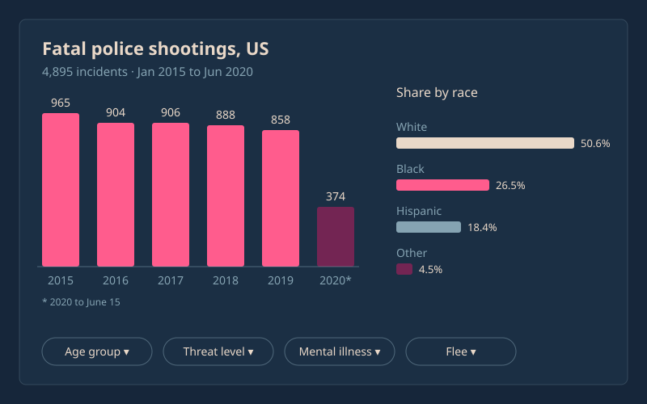

Personal data analytics project · Python and Tableau
US police shootings: data cleaning, statistical testing and interactive dashboard
An end-to-end analysis of 4,895 fatal police shootings in the US from January 2015 to June 2020, from raw CSV to an interactive Tableau dashboard.
- Cleaned the data in pandas: typed dates and ages, standardized nine text fields and removed duplicates
- Built a Tableau dashboard with demographic, geographic and timeline views, filtered by age group, threat level, signs of mental illness and fleeing
- Tested whether unarmed people of different races were more likely to be shot rather than shot and tasered. A chi-square test found no significant difference (p = 0.88)